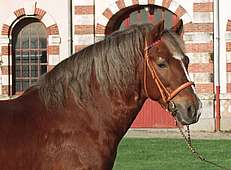

- , et :
- Bande le long de la ligne du dessus. - Bande descendant sur les épaules. - Association des deux, croix dont le centre est au niveau du garrot.
- :
- Plus foncés que la robe de base et sur les membres.
- tête en :
- Plus foncés que la robe de base et sur toute la tête.
- effet :
- Plus clairs que la robe de base et sur le corps :zones plus claires au niveau du grasset, des coudes, de l’intérieur des cuisses, aux ars et au bout du nez.
- robe :
- Poils en réseaux de zones sombres et claires et en forme de pommes, dans lesquelles le centre est plus clair que le contour.Attention, certains chevaux voient leur robe se pommeler quand ils sont en très bonne santé et très bonne condition physique.
- Petites touffes de poils blancs (ressemblant à des flocons de neige) réparties sur toute la robe.
- Petites touffes de poils noirs mélangés à la robe de base, disposés aléatoirement sur la robe.
 - crins , et :
- Plus clairs que les poils de la robe. - De la couleur de l’argent. - Crins blancs et crins de couleur.
- peau :
- Peau rose piquetée de petits points de peau noire.